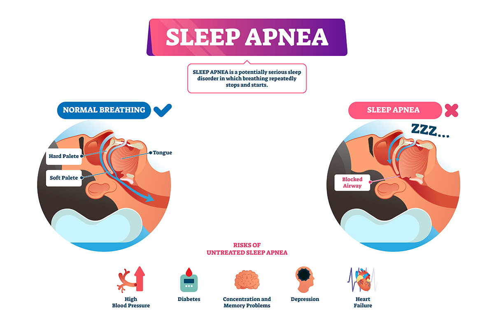

|  |
Sleep apnea is a potentially serious sleep disorder in which breathing repeatedly stops and starts. If you snore loudly and feel tired even after a full night's sleep, you might have sleep apnea.
The main types of sleep apnea are:
- Obstructive sleep apnea (OSA), which is the more common form that occurs when throat muscles relax and block the flow of air into the lungs.
- Central sleep apnea (CSA) , which occurs when the brain doesn't send proper signals to the muscles that control breathing
- Treatment-emergent central sleep apnea , also known as complex sleep apnea, which happens when someone has OSA — diagnosed with a sleep study — that converts to CSA when receiving therapy for OSA
Symptoms:
- Excessive daytime sleepiness, known as hypersomnia
- Difficulty staying asleep, known as insomnia.
- Difficulty paying attention while awake.
- Awakening with a dry mouth.
- Gasping for air during sleep.
- Morning headache.
- Loud snoring.
- Irritability
|